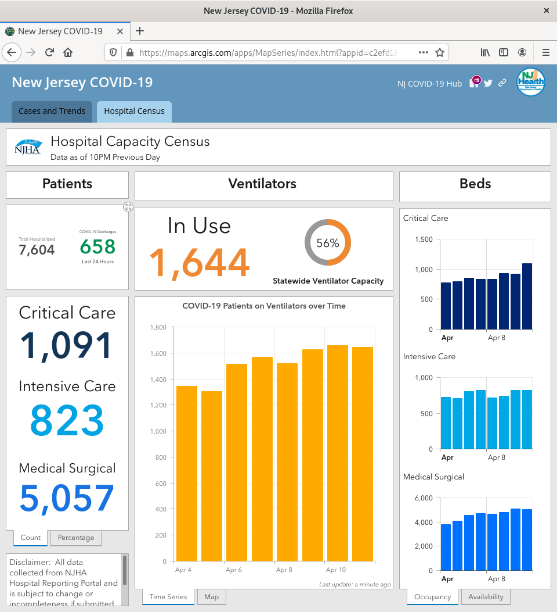
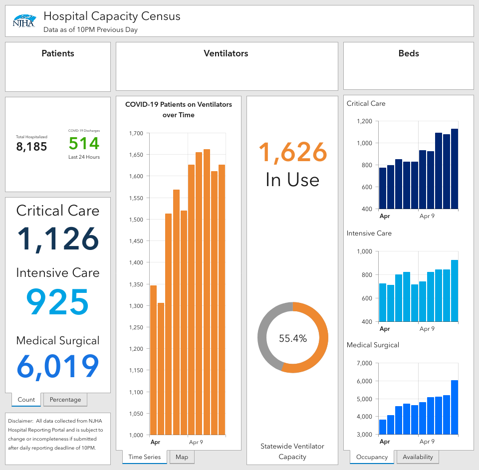
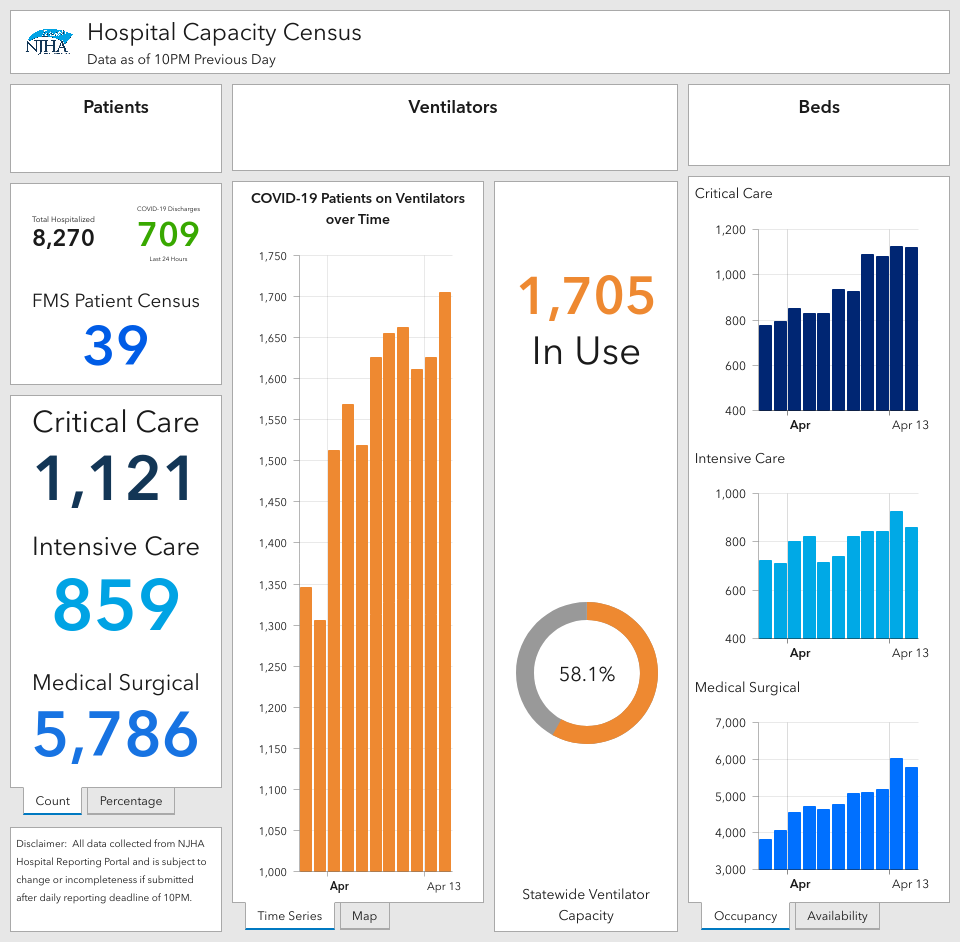
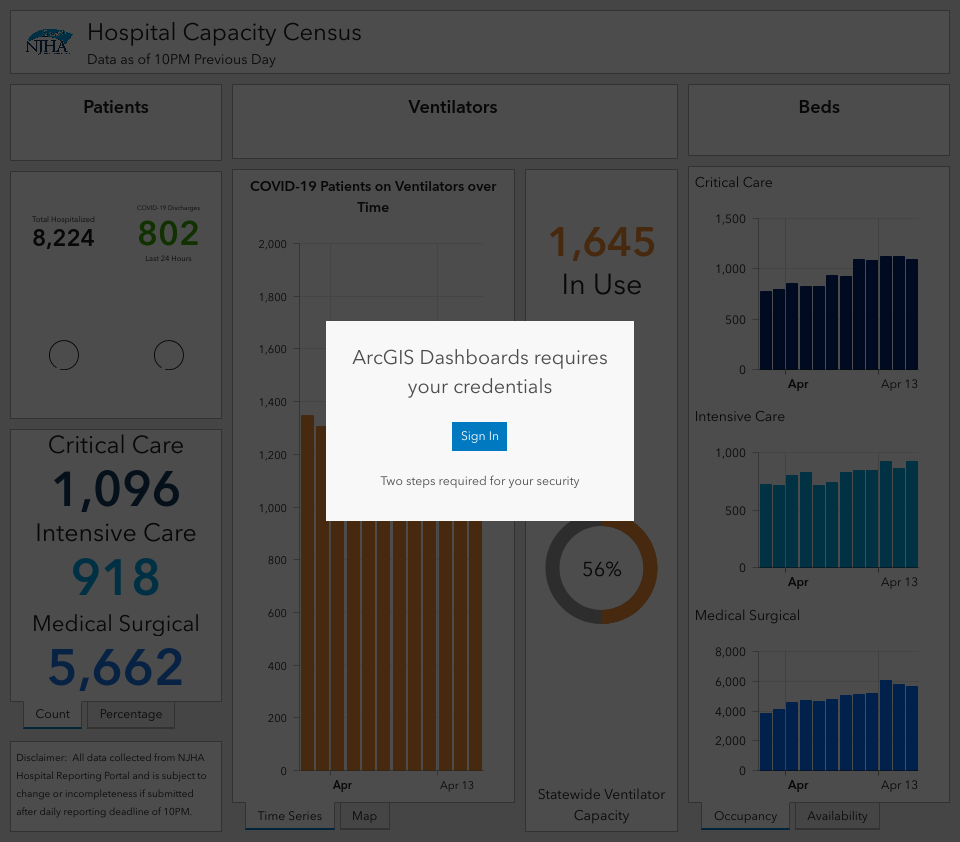
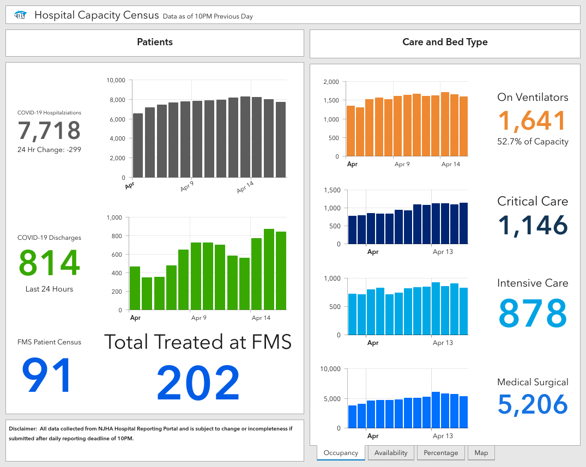
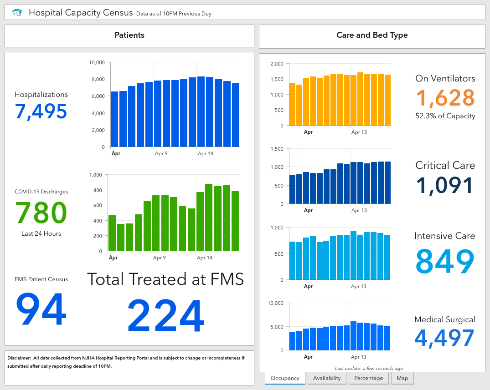
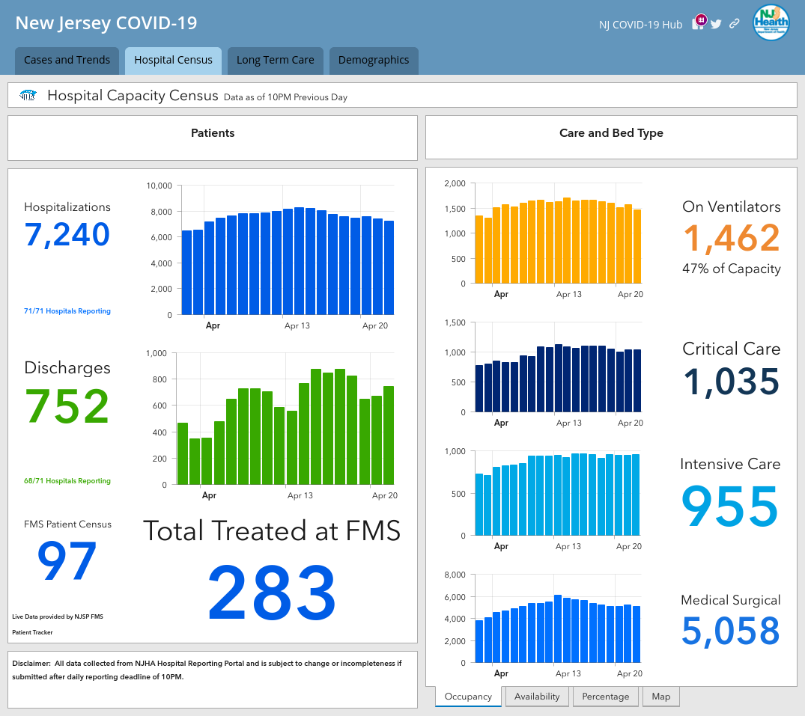
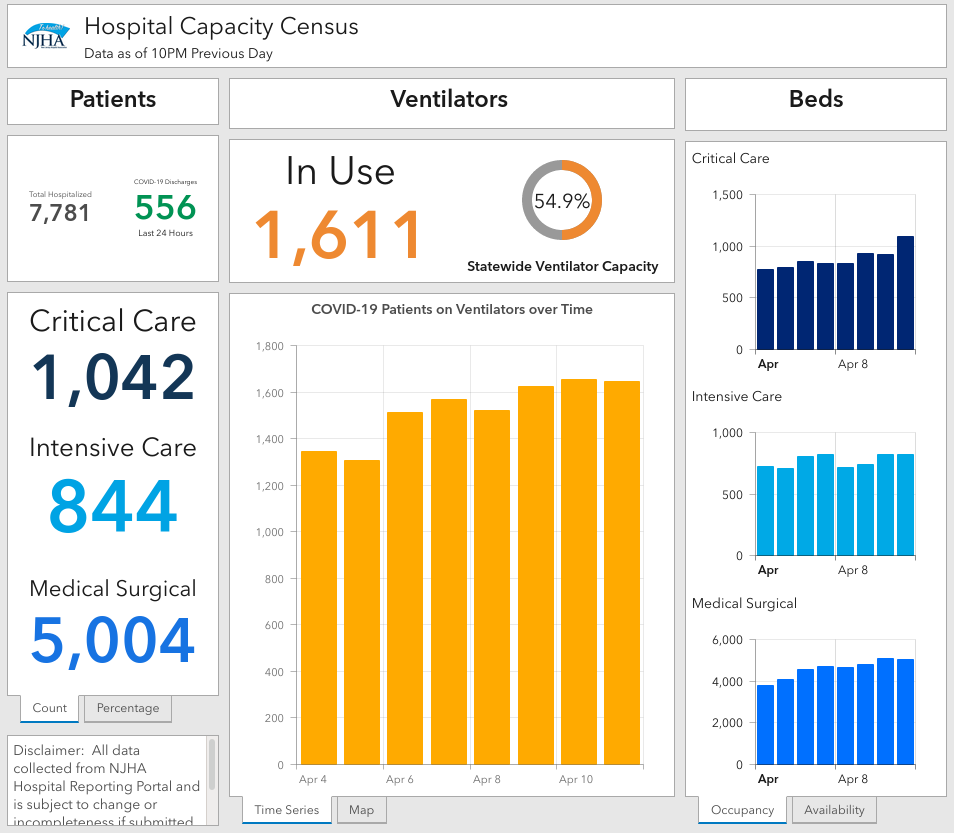

NJ: Hospitalization data also available
Apologies if this is not the right place to post this. (Please help me find the correct location.)
NJ has a hospital census hidden at the second tab of
https://maps.arcgis.com/apps/MapSeries/index.html?appid=c2efd1898e48452e83d7218329e953d7&entry=2
Screenshot taken 2020-04-12 18:56 EST. Note that data is for “10PM Previous Day”

It shows total hospatilization at 7,604 and ICU at 823, and ventilator use at 1,644.
The charts show history. Hovering over the bars, I read
| Data | ICU | Ventilator |
|---|---|---|
| 2020-04-04 | 724 | 1346 |
| 2020-04-05 | 711 | 1306 |
| 2020-04-06 | 801 | 1513 |
| 2020-04-07 | 823 | 1568 |
| 2020-04-08 | 714 | 1519 |
| 2020-04-09 | 740 | 1626 |
| 2020-04-10 | 822 | 1655 |
| 2020-04-11 | 823 | 1644 |
I can’t quite make the other numbers add up to the total hospitalized.
Recent screenshot: 
Another day, another screenshot: 
Another screenshot. Looks like they have some permission issues, but the numbers are still legible 
Sorry I forgot to screenshot yesterday. Looks like they changed the format today or yesterday.

Screenshot just now:

Another screenshot: Values for the last few days hovering over the graph:
| Date | Hospitalizations |
|---|---|
| 2020-04-17 | 7758 |
| 2020-04-18 | 7551 |
| 2020-04-19 | 7473 |
| 2020-04-20 | 7594 |
| 2020-04-21 | 7384 |
| 2020-04-22 | 7240 |
I guess they revised the historic numbers since they don’t match old screenshots.

This issue has been automatically marked as stale because it has not had recent activity. It will be closed if no further activity occurs. Thank you for your contributions!
This issue has been closed because it was stale for 15 days, and there was no further activity on it for 10 days. You can feel free to re-open it if the issue is important, and label it as “not stale.”
Screenshot of just now 